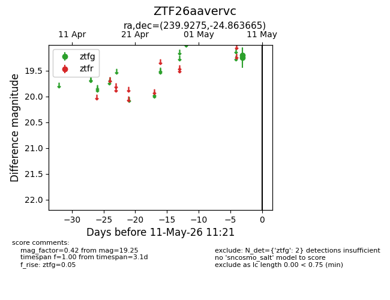
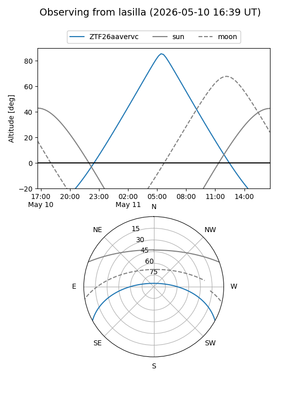
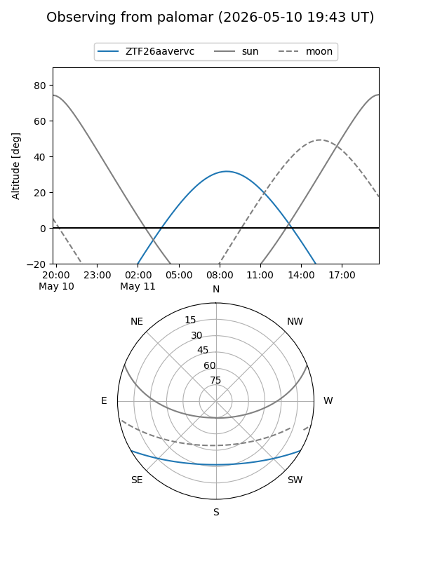

ZTF26aavervc
Target ZTF26aavervc at 2026-05-11 11:24
Aliases and brokers:
FINK: link
Lasair: link
ALeRCE: link
alt names
ZTF26aavervc (ztf,fink_ztf)
Coordinates:
equatorial (ra, dec) = 239.9275,-24.86366
equatorial (HMS+DMS) = 15:59:42.61,-24:51:49.19
galactic (l, b) = (348.2920,+20.99496)
Flags:
Photometry:
last ztfg=19.25
2 ztfg detections
Lightcurve

Visibility


Additional plots